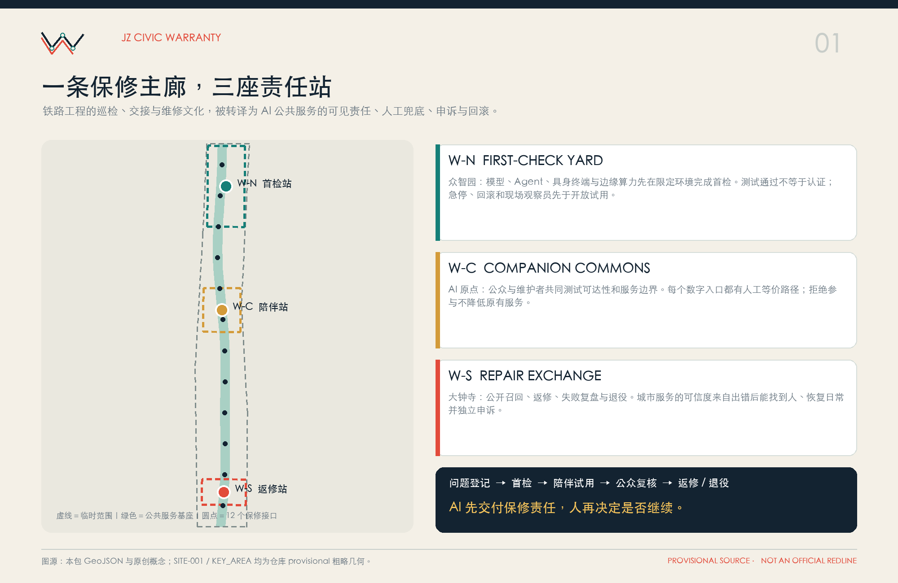
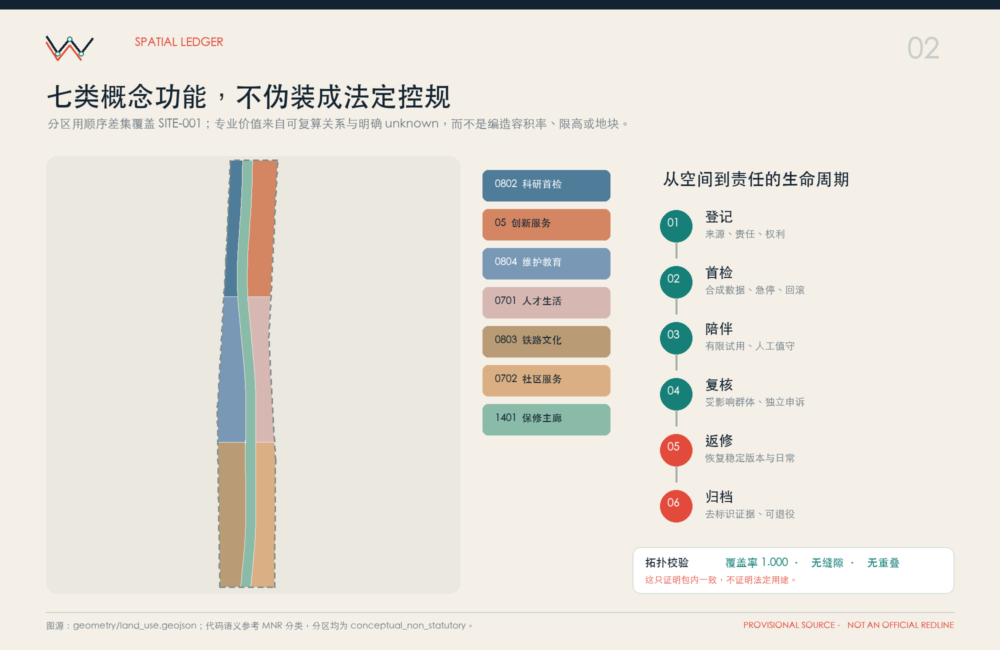
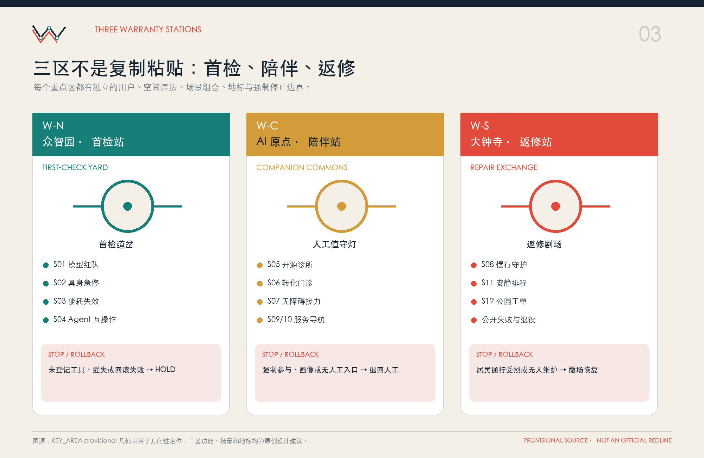
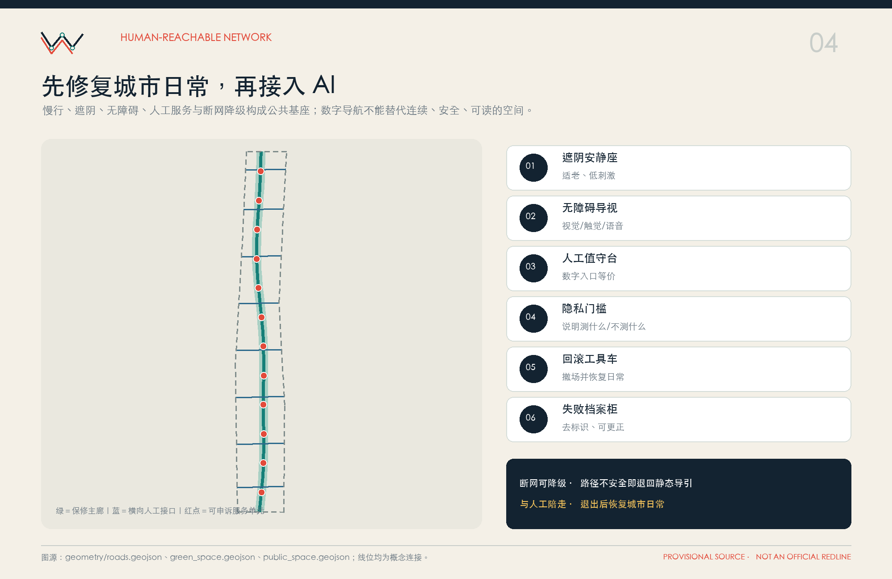
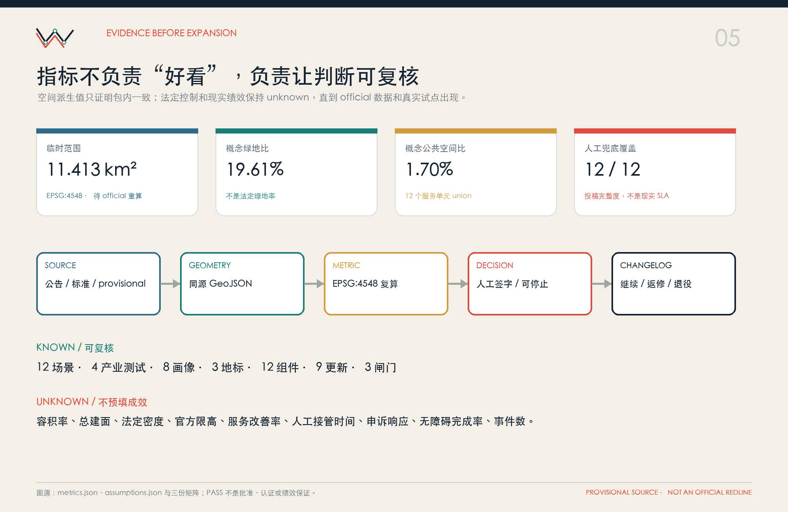

众智园 · 首检站
模型红队、具身急停、边缘算力失效、Agent 互操作。测试通过不等于认证。
面向 AI 公共服务的陪伴式更新。AI 先交付保修责任，人再决定是否继续。
统筹研究范围组织区域知识接口，总体设计范围形成一条保修主廊，三处重点区域分别承担首检、陪伴与返修。两翼输入专业资源并接收公众工单反馈。

七类概念功能用地无缝覆盖 SITE-001；建筑只表达可逆载体颗粒，不代表现状测绘、拆建对象、层数、容积率或获批用途。九项更新从资料重算、断点走查、人工服务台、三站原型推进到公开登记、回滚演练与年度总账。

模型红队、具身急停、边缘算力失效、Agent 互操作。测试通过不等于认证。
维护者学院、人工值守、无障碍共测、独立申诉。居民不是默认实验对象。
公开召回、返修、失败复盘与退役。试用不等于政府批准或商业认证。

先修复连续慢行、遮阴、无障碍、静态导视和人工服务，再判断是否需要 AI。数字入口必须有等价非数字路径；路径不安全、断网不能降级或居民通行受损时立即回滚。

12 张场景卡均有负责人、最小数据、人工兜底、独立申诉、停止阈值、回滚包、留存等级与版本；AI Agent 永远不担任最终 A。
公告 1.3/1.4/1.5 与 Agent.1—Agent.6 已逐条映射到章节、图层、指标、图纸、来源、假设和检查项。机器 PASS 只表示可进入内容评审，不代表批准、认证或现实绩效。

| 证据级别 | 可用于 | 不可用于 |
|---|---|---|
| 公告 / 标准 | 任务、术语、专业方法 | 推导项目已获批控制 |
| 背景案例 | 机制启发 | 照搬法权、规模、绩效 |
| provisional geometry | 方向性设计、展示、复算 | 官方红线、精确面积 |
| agent design | 原创概念、图层与场景 | 政府背书、实施承诺 |
完整资料与边界见 sources.json、assumptions.json、standard_matrix.json 和 design_depth_matrix.json。本页无远程字体、地图瓦片、脚本、表单、iframe 或跟踪。